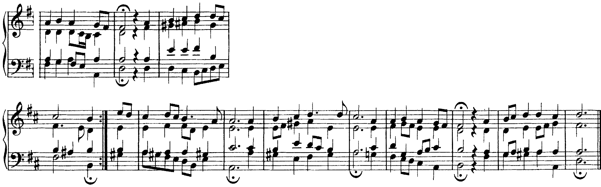

Dove la frase respira: autentica, sospesa, plagale, d’inganno. Si riconoscono in un corale e si scrivono sotto un basso.
La cadenza ha, generalmente, il fine di preparare la chiusa di un periodo o di un brano musicale.
Francesco Tissoni, Metodo elementare di Armonia, p. 11
C8Successioni armoniche e cadenze, lezioni 25 e 28, pp. 282–293: le sigle sono le stesse.
Autentica, V–I. Perfetta (CAp): V e I allo stato fondamentale, tonica al soprano. Imperfetta (CAi): terza o quinta al soprano.
Plagale (CP), IV–I: di solito dopo un’autentica, come conclusione aggiunta.
Sospesa (CS): la frase si ferma sul V (I–V o IV–V); è una virgola.
D’inganno (CI), V–vi: al posto della tonica attesa. La sensibile sale lo stesso; nel vi si raddoppia la terza.
Chiamare cadenza ogni V–I. La cadenza si riconosce prima dal posto, la fine della frase, poi dagli accordi. E senza la tonica al soprano l’autentica è imperfetta, anche con il basso sol–do.

Ogni verso finisce a una corona (bb. 2, 4, 6, 8, 10, 12). Per ciascuna: il basso delle ultime due note, i due accordi, la sigla della cadenza. Le bb. 9–10 hanno lo stesso soprano delle bb. 1–2: che cosa cambia?
Al Workbook · esercizio 6.16 (lezione 4) · 9 minuti
Realizza a quattro parti il basso di otto battute in re maggiore, con I, IV e V allo stato fondamentale, e nomina le due cadenze.
CAp V–I, tonica al soprano. CAi V–I, terza o quinta al soprano. CP IV–I, dopo un’autentica.
CS la frase si ferma sul V. CI V–vi, terza del vi raddoppiata.
Il basso del Workbook si finisce a casa. Domani il primo rivolto.
Compiti per la prossima volta
n. 404 e n. 405 parlato · n. 406 endecalineo · n. 407 e n. 408 cantato · n. 409 e n. 410 ritmico
Ogni pezzo a tempo, senza fermarti: il parlato a nomi, il cantato prendendo il primo suono dalla tastiera, il ritmico battendo la pulsazione.
Scrivi il ritmo sul quaderno: otto battute in 2/4. Ascolta tutto due volte, poi ogni coppia di battute due volte, poi il collegamento 1–4, 3–6 e 5–8, e tutto per controllare.
Il dettato · otto battute
Le sezioni (riferimento, tutto, le coppie, il collegamento) si ascoltano una per una e si ripetono quanto serve; le fasi fanno la procedura della classe, con gli annunci e le pause, da qualunque punto.
Sul quaderno scrivi in testa la sigla C1-D-U06-L4. Si corregge all’inizio della prossima lezione.
Compiti per la prossima volta
Continua la melodia fino a otto battute, in re minore armonica, chiave di violino, metro 3/4: le prime due sono date. Muoviti soprattutto per grado congiunto, e dopo un salto di quarta o più torna indietro per grado; il settimo grado alzato (do♯) sale sempre alla tonica; chiudi sulla tonica, arrivandoci per grado. Ogni battuta piena, l’ultima con una nota sola. Poi cantala o suonala.
Sul quaderno, con la sigla C1-ME-U06-L4 in testa; la foto va su Classroom.
Sotto la melodia scrivi il basso, in chiave di basso: una nota per battuta, lunga quanto la battuta. La melodia è in la minore armonica, metro 3/4. Per ogni battuta scegli fra la tonica (I: la–do–mi) e la dominante (V: mi–sol♯–si): guarda la nota sul tempo forte e le note più lunghe, e prendi l’accordo che le contiene; scrivi sotto il numero romano. La prima e l’ultima battuta sono sulla tonica, la penultima sulla dominante.
Sul quaderno, con la sigla C1-BS-U06-L4 in testa; la foto va su Classroom.
Solfeggio dal quaderno di lettura: parlato n. 404, 405; endecalineo n. 406; cantato n. 407, 408; ritmico n. 409, 410 (a tempo, senza fermarsi). Dettato C1-D-U06-L4 dalla pagina della lezione (sezioni da ascoltare, o le fasi della procedura guidata), sul quaderno con la sigla. Melodia da continuare fino a otto battute (C1-ME-U06-L4). Basso sotto la melodia, una nota per battuta (C1-BS-U06-L4).
In classe
A nomi, a tempo, con la mano che batte. Chi si ferma riparte dalla battuta dopo.
Apri il n. 399 nel quaderno di lettura ↗ chiave di violino · 4/4
In classe
A nomi, a tempo, sul doppio rigo: prima si trovano con gli occhi i passaggi da una chiave all’altra.
In classe
Si prende il tono dalla tastiera, si canta insieme; poi a gruppi.
Apri il n. 401 nel quaderno di lettura ↗ chiave di violino · 3/4 · fa maggiore
Apri il n. 402 nel quaderno di lettura ↗ chiave di violino · 4/4 · do maggiore
In classe
Tutti insieme, battendo la pulsazione. Poi a file, due battute a testa.